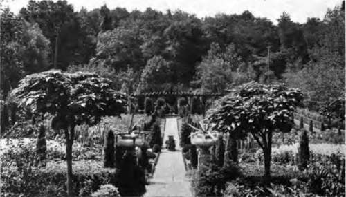
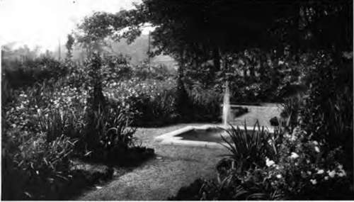

Chapter X. Why A Hardy Garden Is Best
Description
This section is from the book "Flower Gardening", by H. S. Adams. Also available from Amazon: Flower gardening.
Chapter X. Why A Hardy Garden Is Best
Time was when most American flower gardens were hardy. That was still the rule in grandmother's day듮he grandmother, say, of those who now are getting toward middle life.
Grandmother knew the intrinsic value of permanence in the garden; she loved plants that stayed by her, that endured with her the rigors of the winter and woke up smiling in the spring. And she knew full well that, with all else that she had to do from the rising of the sun until long past the going down thereof, such plants must be her main reliance because they represented the minimum of labor.
Came mother. She was rather inclined to stick up her nose at grandmother's garden. Like some of the fine old furniture, it was not quite good enough for the new day and generation. So many a beautiful garden that had been treasured for years by some one now gone to her last account perished from lack of care, and lack of thought, by a more or less slow process of petering out. They died hard, not a few of them; here and there in New England villages root-bound daffodils, tulips, grape hyacinths and "johnny-go-to-beds" are still struggling through the grass to show where once was such a garden.
Mother took a fancy to red cannas, redder geraniums, and reddest salvia, for their gay color, and she had a notion that "foliage plants19듨eaning coleus드nd "elephants' ears" were as necessary to the family position as black walnut furniture and body brussels carpets. These plants kept up a brave show all summer, the while they gave a tropical air to dooryards that was not altogether becoming, to say the least.
Happily the third generation came to its senses. Today the tide is turning back and with a force such as to leave no doubt that the hardy garden is here to stay definitely. Old-fashioned flowers of permanence are being restored to places that knew them in the long ago and ate basic figures in the establishment of numberless new ones.
The hardy garden has come into its own again because it is the best of gardens. It is best by reason of the very permanence that links it with the home, year in and year out, so closely that the child born within sound of it will remember it with infinite pleasure the rest of his life든ven though time and circumstance eventually remove him far hence.
"The hardy garden has come into its own again because it is the best of gardens".
There is another reason, and a potent one. It is nature's way. She uses an abundance of annuals, that there may be no bare spots, and biennials; but trees, shrubs, herbaceous perennials and bulbs are the strength of her gardens. Hers are hardy gardens.
They are by far the most beautiful, the hardy gardens. Not that supremely beautiful gardens that are only of a summer's life may not be made, but the beauty is of a less satisfying kind. Observed once it enchants, for the lavish display of color cannot fail to impress; but when the July vision is like unto that of June, and August sees little or no change, the beauty is of the palling kind. Fancy living with a garden made up of such beds as are to be seen at Hampton Court in summer, for example듢lorious as these masterpieces are for an ever-shifting public.
The beauty of the hardy garden owes much of its charm to the fact that it does not endure, save as a varied pageant. May's splendor is its own, and so with the other months. There is always beauty from April to November듪ften in winter as well; but so frequently does it change that at all seasons today's beauty scarcely can be called tomorrow's beauty. As in nature, picture follows picture.
Plants almost incredibly numerous and varied make this possible. Grandmother had relatively few to draw from; but now the world has been ransacked and the array is nothing short of bewildering. No matter what it is, any effect can be planned and carried out드nd with the feeling that it will become the better with age.
Another point in favor of the hardy garden* There you see plants reach their full development, as nature intended them to be. From the first snowdrop to the last chrysanthemum, every plant pursues its natural course of life; you may observe it mature and immature. On the other hand, bedding plants, such as the geranium, heliotrope and lantana, come into the garden in their youth and are cut down by the frost before the end of it. They are bedding plants at best. When one thinks of the geranium in subtropical California, the heliotrope in the Alameda of Gibraltar and the lantana running wild in Bermuda, all in the greater glory that nature meant to give them, their incompleteness in our northern gardens seems really very pitiful.
Then there is the question of appropriateness, speaking more particularly of temperate climates. Hardy plants are natives of temperate zones, otherwise they would not be hardy. There is accordingly a certain fitness in their use. They seem to fall in with any landscape scheme and look as if they belonged there. A lily from Japan or a bleeding heart from China has the appearance of being at home in a Massachusetts garden, whereas Cuban palms or Arizona cacti, bedded out for the summer in pots, do not. This, of course, is going to extremes to institute a comparison. The idea is the fitness of hardy plants for the general note of home gardens of temperate zones.
Seldom is a hardy garden literally, that is to say exclusively, hardy. Nor is there a valid reason why it should be드ny more than there would be for the prohibition of flowers from a zoological garden. As a matter of fact, some of the finest hardy gardens have liberal plantings pf annuals. To such a purpose most annuals lend themselves admirably, especially when planted in a naturalistic manner to double-crop the patches of ground given over to spring bulbs. That so many of them are natives of tropical or subtropical countries is no argument against them. Few appear out of place in a northern garden in which they are the secondary note. Perhaps they ought to, but they just do not.
The long season of the hardy garden is always a revelation to those who, by the use of only tender bedding plants, have been accustomed to think of the flower garden as having its annual beginning late in May and its end in September. If the proper thought be given to planting, the hardy garden, which is little affected by cold in either ppring or autumn, will have no less than seven months듀pril to October inclusive듮hat are really good ones. There are forty or fifty reliable kinds of flowers that will bloom in April, and, if October has fewer at her command, the numerical deficiency is more than counterbalanced by the showier display.'
But a hardy garden ought to give some enjoyment to the eye the year round, and will, even above a heavy winter blanket of snow, if only a few of the advantages that evergreen shrubs and those with attractive twigs and berries offer are taken advantage of. There are winter days when, if the garden is not an altogether comfortable place to walk in, it may be a pleasant sight from the window.
"They are by far the most beautiful, the hardy gardens".
A mistaken idea of the hardy garden is that it is the most expensive. This is true only of the initial expense, and not always then. If everything has to be purchased at the outset, the creation of a large hardy garden does mean considerable expense; but even then, the investment being a permanent one, the cost at the end of a decade or so may be less than the total amount that would have been laid out for the perishable material of ten consecutive summers.
There is the economy in labor also to think of. A well-made hardy garden can go for many years without complete replanting at any one time; some have gone a generation or more and shown no material deterioration. The changes, in other words, may be made by piecemeal and, if need be, at any convenient time, whereas if the foundation is not hardiness everything has to be done over each year.
It is labor saved in the end to spade the beds or borders fifteen or eighteen inches deep and work in a fair quantity of well-rotted manure. If the soil is really poor, take it out to at least the depth of three feet and fill up with entirely new and good soil. What with frequent stirring of the soil and an annual top dressing of fine manure between the plants, the garden can be kept in good shape indefinitely. Sheep manure, which may be used sparingly for roses, is excellent for surface application and bone meal is worked into the soil with fine results. One of the best of commercial fertilizers for perennials is a mixture of bone, blood and potash; a peony will thank you for a handful of it in the spring.
No hardy garden is made in a day, always excepting the comparatively few products of carte blanche orders. Even when all laid out at once, the plantings call for a considerable amount of reshaping. Then again, some of the finest perennials refuse to be at their best for two or three years unless there is the unusual and extravagant expedient of making use of large clumps등hich soon will have to be taken up and divided, as they are virtually ready for that when set out.
The sensible plan is to make the hardy garden a vision of three or four years hence and compromise with the springs, summers and autumns that come before. The plan in detail is this: Plant shrubs, roses, peonies and fraxinella far enough apart to allow for the maximum expansion. It is just as well, though less imperative, to follow the same rule with funkias, bleeding heart and Lythrum superbum. In the spaces between the plants grow little colonies of spring bulbs, to be followed by transplanted annuals, until the time comes when they are not needed; the bulbs can remain for years with the peonies, as a great deal of ground is required for the spread of the latter's foliage.
In regard to other perennials, fill at first only one-third or one-half of the space laid out for a colony, setting the plants thickly enough together to cause one summer's estimated growth to seem at a little distance nearly to conceal the ground. Fill the remainder of the space with a good and appropriate annual, massed; let one or two of the plants wander over into the perennial colony, that the effect may appear less studied. As the perennial colony becomes crowded remove some of the plants and with them continue the filling of the space. Another way, but not quite so good, is to plant the perennials wide enough apart to allow for a few years' expansion and then fill in the spaces with annuals.
Continue to:
- prev: Chapter IX. Accumulating A Garden
- Table of Contents
- next: Chapter XI. The Special Value Of Perennials